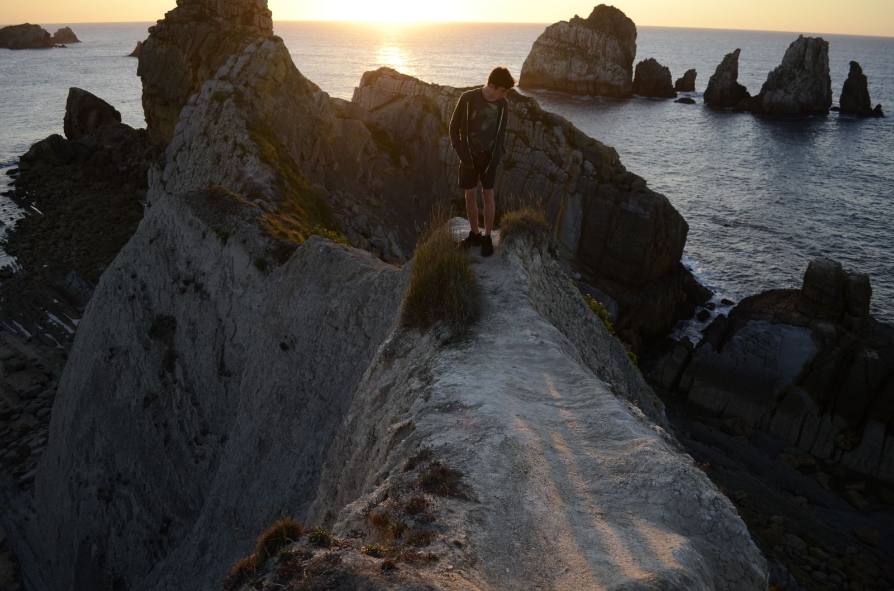

Details: 35mm | f/2 | 1/1600 | Sek. ISO 160
Farn ist einer meiner Lieblingspflanzen! Es war so schön wie er sich dem Herbstlicht entgegengestreckt hat und ich wollte diesen Moment festhalten.
Details: 90mm f/8 1/800 Sek. ISO 320
An diesem diesem Oktobertag war es noch einmal wunderbar warm. Beim Spazierengehen bin ich über einen Strauch mit lauter Blumen gestoßen, den die Bienen geliebt haben.
Details: 26mm f/5 1/320 Sek. ISO 160
Ich liebe Sonneuntergänge – und dieser in Spanien war besonders schön. Die Abendsonne ließ alles in sanftem goldenem Licht erstrahlen.
Solo
Details: 35mm | f/2.2 | 1/160 Sek. | ISO 320.
Die Sonne ist gerade hinter den Bergen verschwunden und es wurde sehr kalt - trotzdem hatte ich eine sehr gute Zeit mit meiner Freundin.
Details: 18mm f/5 1/320 Sek. ISO 160
Ich liebe Berge und der Felsen mit dieser Aussicht war perfekt für ein Foto! Gerade noch rechtzeitig, denn kurz danach ist der Nebel dichter geworden.

Details: 18mm f/3.5 1/320 Sek. ISO 160
Dieser Sonnenuntergang in Spanien hat sich perfekt für ein kleines Fotoshooting angeboten.